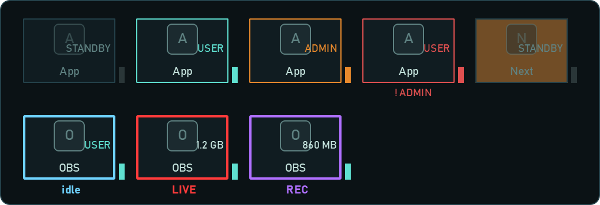
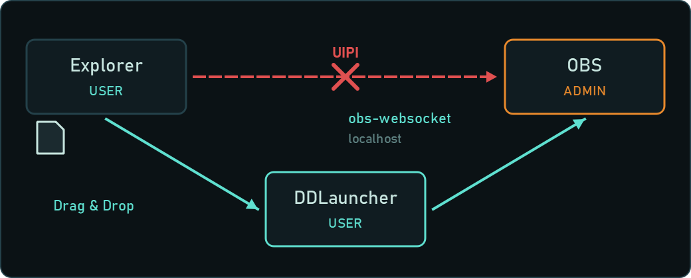
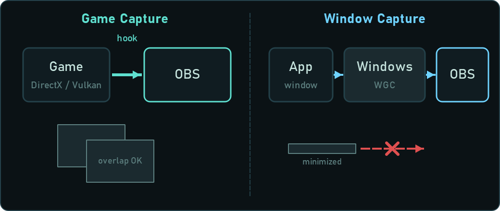
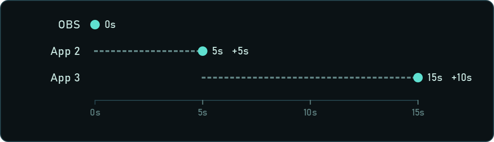
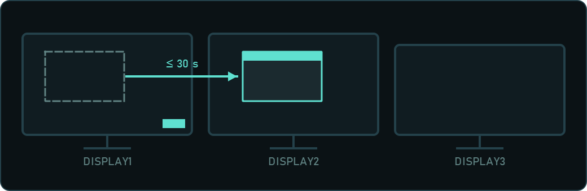
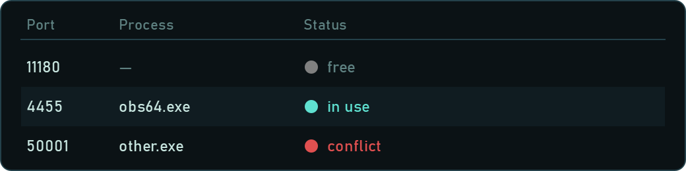
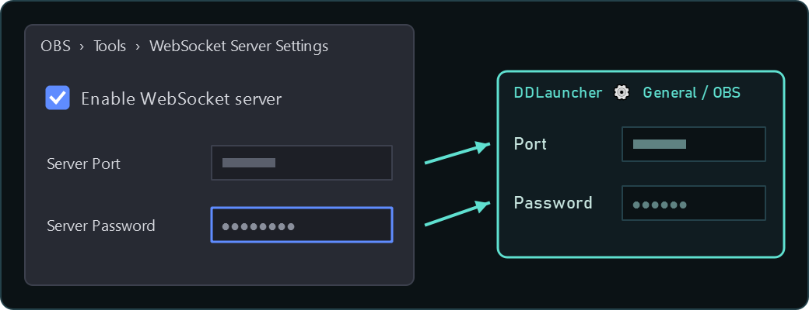

Reading the display

- Frame / lamp gray: stopped / not set
- Green: running (normal rights)
- Orange: running (administrator rights)
- Red: set to "Run as admin" but running with normal rights
- OBS tile frame: light blue = not streaming / red = streaming / purple = recording only. The number in the middle is the amount of data sent
- Tile blinking orange: the next app the launch sequence will start
- Top right of a tile: ADMIN / USER / STANDBY (stopped) / NO PATH (not set)
- GROUP (columns; LINEAR is not available yet): the wheel / ▲▼ rotates the ring. Apps in the same category stack up and slide out sideways on mouse-over. Shift+wheel / tilt rotates within a row
Layout (LINEAR / GROUP), the across / down limits and what happens after the sequence (minimize / hide) can be changed under "General" in the settings.
A hidden launcher can be brought back from the tray icon.
The normal display can be "Icon only (expand on mouse-over)" or "Always expanded" (under "General" in the settings, or from the right-click menu on the launcher's empty area).
In D&D mode and during the launch sequence, the launcher stays expanded.
Change the size with Ctrl+mouse wheel on the launcher, or with "Size" in the settings.
Left-click an icon = launch (does nothing if already running) / right-click = choose the rights to launch with.
Right-click the launcher's empty area for the menu (position, sequence, settings, quit).
Why run OBS as administrator
- OBS can raise its own GPU priority, so "rendering lag / encoding lag" is less likely when a game puts heavy load on the GPU.
- Game Capture / Window Capture can capture games and apps that run as administrator.
- Some games with anti-cheat can only be captured when OBS runs as administrator.
Downsides
- Drag & drop from Explorer stops working. (see below)
- A UAC prompt appears every time it starts. When started at Windows startup, the UAC prompt appears right after you sign in.
- Browser sources, plugins and scripts inside OBS all run as administrator too.
Be especially careful with plugins of unknown origin and browser source URLs.
- Tools running with normal rights (AutoHotkey, macro software, etc.) can't send key presses or window actions to OBS.
For hotkeys, controlling OBS through obs-websocket (Stream Deck etc.) is recommended.
- Files opened and programs started from OBS also run as administrator.
Why drag & drop stops working

Windows has a mechanism called UIPI (User Interface Privilege Isolation) that
blocks window messages from a lower-privilege process to a higher-privilege one.
Explorer runs with normal rights and OBS as administrator, so the drop (OLE D&D / WM_DROPFILES)
never reaches OBS and the cursor shows "not allowed". Running Explorer as administrator is not recommended.
DDLauncher runs with normal rights, so it can receive drops from Explorer.
It sends the dropped file paths to OBS over obs-websocket (local network connection).
Network connections aren't covered by UIPI, so they reach OBS safely even with different rights.
Note: if you start the launcher itself as administrator, D&D won't work for the same reason (the header shows ⚠ADMIN).
Game Capture vs. Window Capture

| Game Capture | Window Capture |
|---|
| How it works |
Hooks into the game's rendering (DirectX / OpenGL / Vulkan) and receives finished frames directly |
Gets the window image from Windows (BitBlt, or Windows 10 Graphics Capture = WGC) |
| Good at |
Fullscreen games, high frame rates, low load.
Other windows on top don't show up |
Works with any app (comment viewers, browsers, tools).
With WGC, browsers / Electron apps show up too |
| Weak at |
Black screen if it can't hook. Anti-cheat may block it.
Normal apps and browsers don't show up.
Games running as administrator need OBS as administrator too |
Doesn't show while minimized (frozen / black).
With BitBlt, hardware-accelerated apps turn black.
Unstable with fullscreen games, and the frame rate drops easily |
What to use when streaming
- Games → Game Capture (mode "Capture specific window" is recommended.
"Capture any fullscreen application" can end up capturing something other than the game you Alt+Tab to)
- Game Capture is black → switch to Window Capture (method: Windows 10 (1903 and up)).
If that doesn't work either, use Display Capture
- Comment viewers, browsers, tools → Window Capture (method Windows 10 (1903 and up) is stable)
- Display Capture is the last resort. Everything on the desktop shows, including notifications, Discord and password fields, so watch out for on-stream accidents
- Game Capture doesn't show windows on top, so using other apps while streaming is safe.
Window Capture is the same, but note that the image freezes when the target is minimized (apps started with "Start minimized" in this launcher should be restored once before capturing)
Black screens and other pitfalls
- Laptops (two GPUs): Display Capture turns black if OBS and the captured app run on different GPUs.
Match OBS's GPU in Windows "Graphics settings".
- DRM-protected video in browsers (streaming services etc.) turns black because of the protection. Turning off the browser's hardware acceleration
may make it show, but be careful about rights issues.
- Apps running as administrator turn black / don't appear in the list when captured with Window Capture from OBS with normal rights.
→ One of the main reasons to run OBS as administrator.
- If Game Capture is black: enable "Use anti-cheat compatibility hook", or switch to Display Capture.
- Windows started minimized may not show in Window Capture.
Restore them to their normal size once after they start.
Launch sequence

- Starts apps in the order set in the settings, each one "delay seconds after the previous app was started". Apps already running are not started twice.
- Put DAWs and VB-Audio (VoiceMeeter etc.) last with a longer delay to avoid them fighting over audio devices.
- "Start minimized" only asks the app to show its window minimized. Some apps ignore it
(for OBS, the argument
--minimize-to-tray is more reliable).
- "Process exe name" is used to check whether the app is running. For launcher-type apps (where a different exe becomes the main app after start), enter the main exe's name.
Choosing the monitor

- When you choose one in the "Move to monitor" column, the launcher waits up to 30 seconds for the window to appear and moves it to that monitor (keeping its relative position and minimized / maximized state).
- Apps started as administrator can't be moved (UIPI prevents the normal-rights launcher from controlling them).
OBS and similar apps remember their last position, so place them once by hand and they'll appear there next time.
- Apps that show a splash screen right after starting may not have their main window moved.
Ports

- Register the ports used by OBS WebSocket (4455), comment viewers and integration tools to check their status.
- Free (gray) / In use (green: used by the expected process) / Conflict (red: used by an unexpected process, or registered twice).
- Enter an exe name (e.g.
obs64.exe) under "Expected process" to show a conflict when another app grabs the same port.
- "Free up" closes the process using that port. Processes running as administrator can't be closed.
For conflicts, the usual fix is to change the port number in one of the apps' settings.
OBS settings

In OBS, enable it under "Tools" → "WebSocket Server Settings", then enter the port and password
in DDLauncher's settings under "General / OBS".